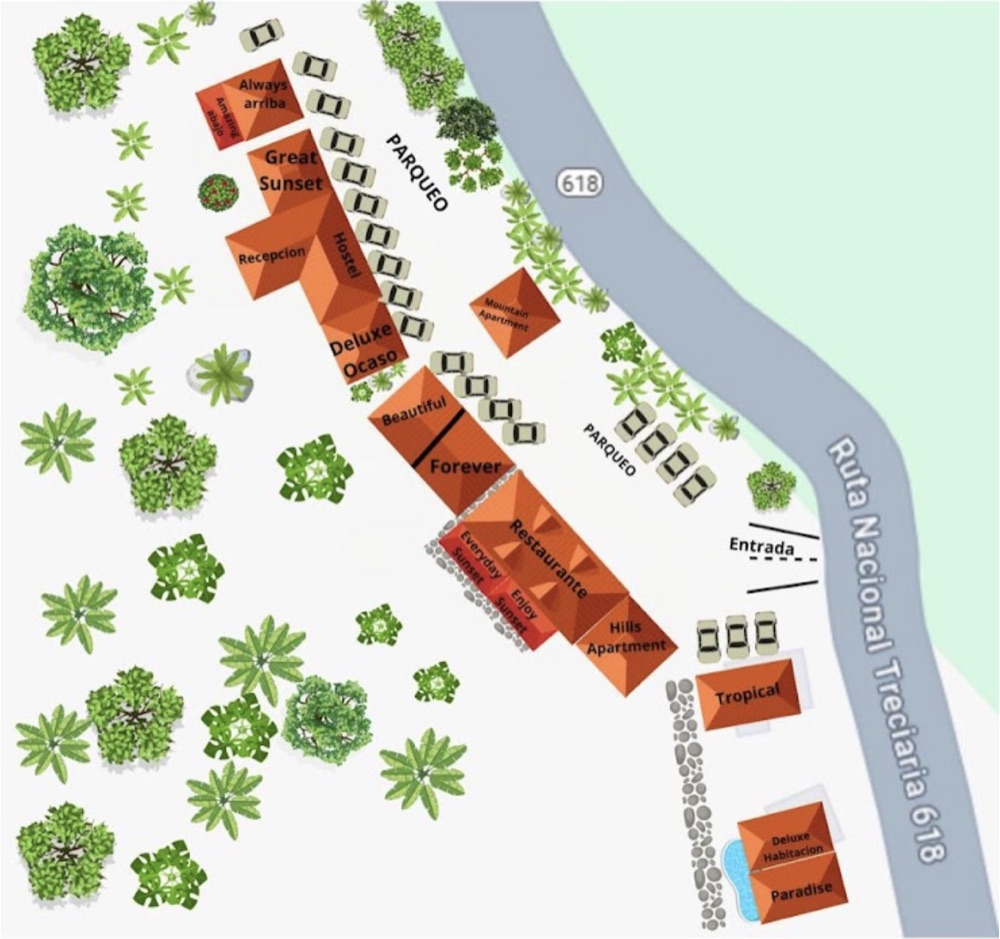

02
Logística general
💵 Cómo conseguir efectivo para los cuidacoches ("wachiman")
Casi todo el estacionamiento de playa/calle en Costa Rica es informal — cobran en efectivo (propina habitual US$1-2 o ₡500-1.000). Hay casos de cuidacoches que siguieron a un turista hasta un cajero para cobrar, porque no aceptan tarjeta. Cerca de Manuel Antonio además hay falsos "encargados" que dicen que el estacionamiento oficial está lleno para derivar a uno propio más caro — el parque no tiene estacionamiento propio: hay playones privados a ~150 m de la entrada (~₡5.000, en efectivo), y conviene ir lo más cerca posible sin hacer caso a quienes paran el auto lejos. Qué parqueos son oficiales y cuáles informales está en cada día del itinerario.
Opción A — Sacar del cajero en Costa Rica con la tarjeta de débito argentina, paso a paso:
- Insertar la tarjeta (BAC Credomatic, Banco Nacional, BCR, Scotiabank — hay en aeropuertos, shoppings y bancos), elegir español, elegir "ahorro/corriente" (no "adelanto en efectivo" de crédito, sale más caro), ingresar el PIN.
- Punto crítico: si ofrece "¿aceptás la conversión a tu moneda?" (DCC) — rechazarlo siempre y elegir que cobre en colones. La conversión del cajero en el momento tiene peor tasa que la del banco.
- Qué pasa del lado argentino: sí, toma pesos de la cuenta de débito y entrega colones — pero se liquida como compra en moneda extranjera, al tipo de cambio "dólar tarjeta": hoy (2026, sin Impuesto PAÍS que venció en dic. 2024) es dólar oficial + 30% de Percepción de Ganancias, recuperable al año siguiente vía AFIP si no se debe Ganancias.
- Aparte, cada cajero cobra una comisión fija de US$5-8 por extracción (ej. BAC ~US$7,80) — conviene hacer una sola extracción grande, no varias chicas.
Opción B (la elegida) — Llevar dólares en billete comprados en Argentina:
- Se necesita poco (~US$20-40 en propinas para todo el viaje), y así se evitan los dos recargos (comisión del cajero costarricense y el 30% de Ganancias argentino). El dólar es ampliamente aceptado en Costa Rica.
- Qué billetes traer: mezcla de chicos (US$1, US$2, US$5) para propinas puntuales, y algunos más grandes (US$20-50) por si hace falta algo mayor.
- ⚠️ Estado de los billetes: muchos bancos/comercios de Costa Rica rechazan billetes dañados — manchas mayores a 3cm², roturas mayores a 0,5cm, perforaciones, o cualquier mutilación. BAC no acepta ningún billete dañado. Pedir billetes nuevos/en buen estado al comprarlos.
🚗
Auto de alquiler
Nissan Kicks o similar✓ Reservado
EconomyBookings / Avis · Reserva B29401782
US$317,42 pagado en su totalidad
SUV automática
Kilometraje ilimitado
SLI incluido
Retiro sáb 20/3/2027 a las 10:00 → devolución sáb 27/3/2027 a las 21:00, en el aeropuerto de San José (SJO).
- Gracia en la recogida: 2hs de tolerancia (hasta las 12:00 PM) antes de riesgo de "no-show".
- Gracia en la devolución: 29 min de tolerancia (hasta las 09:29 PM) antes de que cobren un día extra.
- ✅ SLI incluido: EconomyBookings confirmó por mail que la responsabilidad civil obligatoria (TPL/SLI) solo queda afuera para conductores de USA y Canadá; con licencia argentina ya está en los US$317,42. No pagarla de nuevo en el mostrador. Lo que no incluye es CDW/TP (daños y robo del auto), que cubre la Visa Signature; si no la aceptan, Avis puede pedir un depósito de ~US$2.000.
- En el mostrador: presentar la Visa Signature como cobertura, en vez de comprar el seguro de Avis ahí.
- 📄 Llevar impresa la constancia de cobertura de la Visa Signature: pedirla al banco o a Visa en enero/febrero de 2027, que diga textualmente Costa Rica o Centroamérica; si no lo dice, pueden obligar a comprar el seguro de la rentadora. En papel, no solo en el celular.
- A confirmar con el banco: si exige pagar el alquiler con esa misma tarjeta (la reserva figura como "Pagar ahora" a EconomyBookings) y que un SUV como el Kicks no esté excluido.
- ⛽ Nafta: foto del tablero al retirar, tanque lleno la noche anterior a cada tramo largo o sin estaciones (está marcado en cada día) y devolución con tanque lleno y ticket de la carga. Política de combustible: lleno/lleno.
- ⛽ Cómo se carga en Costa Rica: como en Argentina, con playero (no hay autoservicio) y sin pagar antes. Pedir "lleno de regular" (Plus 91, la que va para el Kicks; la "Súper" es de 95 y no hace falta). Se paga al playero con tarjeta (firma) o en efectivo, mejor en colones. El precio lo fija el Estado y es igual en todas las estaciones. Chequear que el surtidor arranque en cero y que el monto coincida con el ticket, y no perder de vista la tarjeta.
- Llevar impreso también: voucher B29401782, mail de EconomyBookings que confirma el SLI incluido, pasaporte, licencia y el PID (válido hasta julio de 2027).
Ver reserva oficial →
🛏️
Alojamiento — detalle completo
Alojamiento — criterio y opciones por zona
Criterio: se pasa poco tiempo en el hospedaje y no hace falta lujo. Lo necesario: baño privado, agua caliente, ropa de cama y toallas, A/C y cama cómoda.
La Fortuna (3 noches, 20-23/3) — 11 referencias, no decisión cerrada
Vistas Volcán Arenal 4⭐ Mejor precio
4,8★ (241 reseñas) · Favorito entre huéspedes
US$122 3 noches
A/C2 dormitorios
A 1,5km del centro — el más barato de la zona con buen respaldo.
Ver en Airbnb →
Tucan Container
9,6 "Excepcional" (14 comentarios)
US$183-203 3 noches, según cancelación
A/CJacuzzi privado
Baño con agua caliente, balcón con jacuzzi y vista al Arenal, pegado al parque nacional.
Ver en Booking.com →
Arenal Home
4,93★ (339 reseñas) · Favorito top 10% · Superanfitrión
US$203 3 noches
A/C
Cocina, lavadora, a 2 cuadras del centro.
Ver en Airbnb →
Precioso apartamento en el centro
4,89★ (188 reseñas) · Favorito entre huéspedes
US$158 3 noches
A/C
A/C confirmado por reseñas, en el centro.
Ver en Airbnb →
Alojamiento en La Fortuna
4,85★ (112 reseñas) · Favorito entre huéspedes
US$187 3 noches
A/C
Mismo anfitrión que Vistas Volcán Arenal 4.
Ver en Airbnb →
Lightroom #2, vista al Arenal
4,84★ (446 reseñas, el mayor respaldo) · Favorito
US$195 3 noches
A/CBaño privado
—
Ver en Airbnb →
Chalet La Fortuna
4,86★ (129 reseñas) · Favorito entre huéspedes
US$209-268 3 noches, confirmar
A/C
⚠️ Ubicación contradictoria ("San Ramón" en la ficha vs. "10 min de La Fortuna" según el anfitrión) — confirmar antes de considerarla.
Ver en Airbnb →
Boutique Hotel Containers
10/10 "Excepcional" (11 opiniones)
≈US$164-215 3 noches
A/CKitchenette
⚠️ NO es La Fortuna — 35-37 min en auto, la peor ubicación de la zona.
Ver en Hoteles.com →
Almendros Eco-Villas
8,6/10 (28 opiniones)
≈US$166 3 noches
A/C ⚠️ parcial
Casa entera, 2 piscinas. Una reseña advierte A/C solo en 1 cuarto. A 15-20min de las atracciones.
Ver en Hoteles.com →
Arenal Sweet Bee Cabins
4,94★ (84 reseñas) · Favorito top 10%
US$275 3 noches
A/C2 dormitorios
A 5min del centro — la mejor ubicación, pero la más cara de la zona.
Ver en Airbnb →
Loft increíble en el centro de Fortuna
5,0★ (85 reseñas) · Favorito · Superanfitrión
US$269 3 noches
A/CVentilador
En el centro — la más cara de todas.
Ver en Airbnb →
La Fortuna — más opciones (Google Hotels, sin verificar)
Precios aproximados, convertidos de pesos argentinos. Son pistas para confirmar directo en Booking o con el hotel, no cotizaciones cerradas.
Hotel Alicia🔍 Sin verificar
4,6★ (199 reseñas)
≈US$62 3 noches
A/CDesayuno
Hotel 3★, mitad del precio de Vistas Volcán Arenal 4 con rating similar — confirmar antes de reemplazarla.
Buscar en Booking.com →
Casona Rústica & Bungalows - Tangara🔍 Sin verificar
4,6★ (331 reseñas)
≈US$79 3 noches, -29%
A/C
Hotel 3★.
Buscar en Booking.com →
Hotel Villa Fortuna🔍 Sin verificar
4,5★ (165 reseñas)
≈US$81 3 noches, -32%
A/CPileta
Desayuno pago aparte.
Buscar en Booking.com →
Nice Place Hostel🔍 Sin verificar
4,6★ (89 reseñas)
≈US$36 3 noches
A/CDesayuno
Hotel 3★ pese al nombre "hostel" — traslado aeropuerto incluido.
Buscar en Booking.com →
Hotel Arenal Xilopalo🔍 Sin verificar
4,7★ (854 reseñas — el mayor volumen de la zona)
≈US$72 3 noches
A/CTraslado aeropuerto
El respaldo de reseñas más grande de toda La Fortuna, por lejos.
Buscar en Booking.com →
La Fortuna Lodge by Treebu Hotels🔍 Sin verificar
4,8★ (279 reseñas)
≈US$114 3 noches
A/CDesayuno gratisSpa
Mismo puntaje (4,8★) que Vistas Volcán Arenal 4, pero más barato y con desayuno/spa/accesibilidad silla de ruedas incluidos — el competidor más directo de todos los encontrados hoy.
Buscar en Booking.com →
Princesa de la Luna EcolodgeRecomendado por Emma Terra
sin cotizar en fechas exactas
≈US$53-59 por noche
A 5km del centro
Finca de plantas tropicales con 100+ especies de árboles frutales, sobre la carretera a San Ramón. Cabina privada en el bosque, ~10 min en auto del centro.
Buscar en Booking.com →
Monteverde (2 noches, 23-25/3)
Loft colibrí⭐ Mejor precio
4,78★ (201 reseñas)
US$130 2 noches
A/C central
Cocina equipada, balcón con colibríes — el más barato con A/C confirmado, casi la mitad de las otras opciones cotizadas.
Ver en Airbnb →
ECO RIVER DOME
4,97★ (300 reseñas) · Favorito top 5% mundial
US$230 2 noches
A/C portátil
Cocina, vista panorámica.
Ver en Airbnb →
Camino Verde B&B Monteverde
9,0 "Fantástico" (1.476 comentarios)
US$240 2 noches
A/CDesayuno incluido
A 350m del centro de Santa Elena.
Ver en Booking.com →
Casa Torremar en Monteverde
4,83★ (510 reseñas, el mayor respaldo) · Favorito
US$213 2 noches
A/C ventana2 dormitorios
—
Ver en Airbnb →
Bello Horizonte, cerca de Monteverde
4,98★ (116 reseñas) · Favorito
US$184 2 noches, reserva anticipada
A/C + ventilador
⚠️ "Cerca de" Monteverde, no en el pueblo — confirmar distancia.
Ver en Airbnb →
Manuel Antonio / Quepos (1 noche, 25-26/3) — reservado
Pura Natura Lodge✓ Reservado
Booking.com · Confirmación 6045184519 · 8,6 "Fabuloso" (1.153 reseñas)
US$80,36 1 noche, no reembolsable, ya pagado por Booking
A/CParkingVista al marCocinaSin desayuno
Apartamento de 2 dormitorios con vistas al océano: apartamento entero de 100 m², una cama doble en cada dormitorio, baño privado, cocina, balcón y patio.
Entrada: jue 25/3 de 15:00 a 21:30, llegada avisada y aprobada entre las 17:00 y las 18:00. Salida: vie 26/3 hasta las 11:00.
Dirección: 200 m al norte de la Escuela de Manuel Antonio. A unos 4 km de la entrada del parque, con parada de colectivo al lado.
Pedido al reservar: dejar el auto en el estacionamiento con las valijas, o las valijas en recepción, el viernes hasta volver del parque. Falta la respuesta. Si no contestan, las valijas van en el baúl, sin nada a la vista.
A tener en cuenta: el restaurante del lugar está arriba del apartamento y puede oírse a la noche. No todos los apartamentos tienen acceso a la piscina. No pagar nada por links que lleguen fuera de Booking.
Check-in remoto: no hay recepción permanente y se entra por cuenta propia. El formulario de registro del lodge es obligatorio; un día antes del check-in mandan por WhatsApp o correo el código de acceso, los datos del wifi y un contacto para la estadía.
Cómo llegar al apartamento (ingreso después de las 15:00): entrar por la entrada principal, sobre la Ruta 618. Los apartamentos están entre la entrada y el fondo del parqueo, cada uno con su nombre en un cartel de madera: ir directo al que corresponde.

Silencio de 21:00 a 8:00.
Ver en Booking.com →
Uvita (1 noche, 26-27/3) — reservado
Ballena Rey Hotel✓ Reservado
Booking.com · Confirmación 6026998678 · 9,0 "Fantástico" (1.601 reseñas)
US$109,88 1 noche, no reembolsable, ya pagado
A/CDesayuno incluidoParkingPiscinaCocina
Apartamento - Planta baja: 48 m², 2 camas dobles grandes y sofá cama, baño privado, cocina, patio y terraza.
Incluye: desayuno, 1 plaza de parking, wifi y piscina (abierta hasta las 21:00).
Entrada: vie 26/3, llegada avisada y aprobada entre las 15:00 y las 16:00 (la recepción recibe hasta las 23:30; si se atrasa la llegada, avisar). Salida: sáb 27/3 de 10:30 a 11:00.
Pago: el hotel ya cobró el total con la tarjeta de la reserva. No reembolsable; permite cambiar las fechas.
Dirección: del Restaurante La Fogata 150 m sureste, calle del Mariposario, Uvita. A 1,3 km de Playa Uvita.
Valijas y ducha: el hotel confirmó que guarda las valijas el sábado después del check-out, durante el tour de ballenas, y que al volver se puede usar el área de ducha antes de salir a San José.
Silencio de 22:00 a 6:00.
Ver en Booking.com →
🎟️
Entradas y actividades
Todas las paradas pagas del viaje
Precio por adulto extranjero, en USD — no incluye comida.
| Día | Atracción | Precio | Nota |
|---|
| Día 1 | Hacienda Alsacia — Coffee Tour | US$36 | 90 min, solo con reserva |
| Día 1 | Volcán Poás (SINAC) | US$15 | Solo online, con franja; probablemente +13% de IVA. Parqueo US$4 |
| Día 2 | Catarata La Fortuna | US$18-20 | Online con franja o en la puerta |
| Día 2 | Arenal 1968 | US$26 | US$45 con acceso a sus termas |
| Día 3 | El Choyin (río termal) | Gratis | Sin reserva; cuidacoches informales en el parqueo |
| Día 3 | Blue Falls + Catarata del Toro | US$25 | Combo; Blue Falls solo, US$20. Sin reserva, cierra los domingos |
| Día 5 | Reserva Santa Elena | US$21 | Sin reserva |
| Día 5 | Selvatura — puentes colgantes | US$49 | Sin guía, 8 puentes |
| Día 5 | Selvatura — santuario de perezosos | US$40 | +13%. Reserva obligatoria |
| Día 5 | Caminata nocturna | US$28-45 | Según el operador |
| Día 7 | PN Manuel Antonio (SINAC) | US$16 | Solo online; probablemente US$16 + 13% de IVA (≈US$18) |
| Día 8 | Tour de ballenas en lancha | US$85-105 | Incluye la entrada al parque y la Cola de Ballena |
Fuentes: Hacienda Alsacia · El Choyin · Reserva Santa Elena · Selvatura · SINAC — Marino Ballena
🎟️ No hay pase combinado de parques
En Costa Rica no existe un pase anual ni un combo de parques como el "America the Beautiful" de EE.UU. Cada parque de SINAC se compra por separado en el sistema oficial, con su propio precio y su propia franja horaria.
⚠️Ojo con los sitios truchos: sinac-cr.com ofrece entradas "con 40% de descuento" y está marcado como phishing. El único oficial es sinac.go.cr / serviciosenlinea.sinac.go.cr.
☕ Hacienda Alsacia en marzo — ¿vale la pena sin cosecha?
Marzo es fuera de temporada de cosecha (la cosecha real es oct-feb), pero el tour vale la pena igual. Son 90min guiados por el vivero, el beneficio húmedo, el patio de secado y la planta de tostado — el tueste NO depende de la cosecha (se tuesta grano ya almacenado todo el año), así que se ve en vivo sin importar la fecha. Termina en un pabellón al aire libre con vista a la plantación y una cascada, con una cata guiada ("cupping"): aromas, notas de sabor, cómo catar en el paladar, y degustación final.
Lo único que no se ve en marzo es la recolección de granos maduros y el beneficio húmedo procesando cereza fresca en vivo — esas paradas se vuelven más explicativas que "en acción". Se pierde ver la cosecha, no la esencia del tour: reseñas fuera de temporada siguen siendo positivas, sobre todo por el recorrido educativo completo y la cata final.
🍽️
Comer, café y comprar café — por región
Lista por región, sin repartir por día: nombre, dirección, días y horarios, con link al mapa y a su sitio. Los horarios vienen de agregadores (Wanderlog, Tripadvisor, Google) salvo Don Rufino y María Bonita, que son de su sitio oficial: reconfirmar por WhatsApp en feb/mar 2027. ☕ café · 🍽️ comer · 🛍️ para llevar. Todo está marcado en el mapa del viaje, en las capas Comer, Café y comprar café y Camisetas (los cafés que ya estaban quedaron en la capa base del itinerario). También están guardados en tu lista nativa "Costa Rica" de Google Maps (44 sitios contando los 8 originales), la que se usa para navegar desde el iPhone. Incluye recomendaciones de la pareja de viajeros Two Roaming Souls. Todo está marcado en la capa "🍽️ Comer" del mapa y en la lista "Costa Rica".
🌋 Ruta Día 1 · Alajuela / Poás
- Hacienda Alsacia (Starbucks Coffee Farm) ☕ 🛍️ café📍 San Luis, Sabanilla, Alajuela, en las faldas del Volcán Poás🕒 Tours de 90 min todos los días, 8:00 a 16:00 (una fuente; el itinerario tenía 8:00 a 18:00, reconfirmar)Ya está en el itinerario (US$35). Tiene café-pabellón con cata y una tienda con café, tazas y remeras.📍 Google Maps · Comprar tour
- Restaurante El Sabor de la Montaña 🍽️📍 50 m norte de la delegación de Poasito, sobre la ruta al Volcán Poás🕒 Mar y mié 12-16 · jue 12-17 · vie 12-16 · sáb 9-17 · dom 9-18 · lunes sin dato (probable cerrado)4,8★. Comida típica a buen precio; recomiendan la cazuela de queso con chorizo. Tel 6361-7395 / 2482-1367. Acepta reservas y tarjeta.📍 Google Maps · Facebook
🌋 La Fortuna / Arenal
- ⭐ Raúl Castaño Fortuna Mirador ☕ 🍽️📍 Hotel Montaña de Fuego, a ~10 min del centro (se llega fácil por Waze)🕒 Sin confirmar para este local (el del centro cierra a las 22:00)El de la vista: terraza trasera con el Arenal de fondo, vacas y cuatriciclos pasando. En los videos: "el café estaba bien, pero las vistas eran todo". Con cielo despejado se ve el volcán; se puede reservar la cena para ver el atardecer. Otros locales de la cadena: Fortuna Downtown (frente a Spectacolar Cantina, +506 8800-3911), Bakery, Coronado, Plaza San Carlos. ⭐ Prioridad.📍 Google Maps · Web
- Sloffee Coffee Station ☕📍 Diagonal al Hotel Arenal Paraíso🕒 Todos los días, 6:00 o 7:00 a 17:00 (las fuentes difieren)4,8★ (913 reseñas). Primera cafetería de especialidad del pueblo. Croissants, pie de limón, banana bread. Terraza con selva (tucanes y perezosos).📍 Google Maps · Instagram
- D'Balu ☕ 🍽️📍 Zeta 13, frente al cementerio, junto a Canoa Aventura🕒 Todos los días, 7:00 a 18:00Café de especialidad, desayuno y almuerzo, vitrina de dulces. Luminoso, bebidas con jarabe (muy dulce, según el video).📍 Google Maps · Facebook
- Chocolate Fusion ☕ 🛍️ chocolate📍 Frente al parque central, una cuadra al norte de la Ruta 142🕒 Todos los días, 9:00 a 20:00Chocolatería "del grano a la barra" con cacao orgánico de la zona (maracuyá, chile, coco-curry), más café, helado y facturas. Aire acondicionado.📍 Google Maps · Facebook
- Organico Fortuna ☕ 🍽️ 🛍️ souvenirs📍 100 m al este del parque central (una cuadra)🕒 Todos los días, 9:00 a 21:004,4★ (1.015 reseñas). Café y comida sana, con muchas opciones veganas, vegetarianas y sin gluten: sándwich de falafel, ensalada arcoíris, smoothie bowls, chilaquiles en el desayuno. Adentro hay un mercadito con productos orgánicos, ropa de diseñadores locales y souvenirs. Es el café favorito de Emma Terra en La Fortuna, que avisa que es caro: pagó US$17 por un café y una barrita. Tel +506 8572-2115. Two Roaming Souls también lo recomienda: ingredientes orgánicos, veg/vegano, y avisan que es algo más caro.📍 Google Maps · Web · Instagram
- Red Frog Coffee Roasters ☕ 🛍️ café📍 Calle 142, 50 m oeste del Super Cristian #4 (~2 km al oeste del parque)🕒 Lun, mar y jue a dom 7:00-20:00 ⚠️ Cerrado los miércoles (Tripadvisor).Compran directo a pequeños productores; venden bolsas de café para llevar.📍 Google Maps · Web
- Vita Café ☕📍 Frente al parqueo de la Catarata La Fortuna (hay otro local en el centro, 50 m norte del Banco Popular; los dos están guardados en la lista de Google Maps)🕒 Sin datoEspresso cuidado, opciones de leche vegetal, cookies de manteca y carrot cake. Queda al lado de la catarata.📍 Google Maps
- Don Rufino 🍽️📍 Centro de La Fortuna (esquina, desde 2005)🕒 Todos los días, 12:00 a 21:30Cocina de autor con producto local (chef Santiago), gama medio-alta sin precios publicados. Para muchos, el mejor de la zona. Probar: pollo de la abuela, chorizo de cordero, costilla de cerdo, ravioles de costilla, burrata local. Menú degustación de 5 tiempos "Huetar Norte" con cupo limitado. Tel +506 2479-9997 / WhatsApp 8466-4288. Reservar.📍 Google Maps · Web · Reservar
- María Bonita Steak House 🍽️📍 25 m sur de la iglesia católica, frente al parque central🕒 Todos los días, 11:30 a 22:30Parrilla a leña y carbón: porterhouse, rack de cordero, ceviche, risotto de trufa. En el video destacan el Bollo Campesino, el filete mignon, el mojito de maracuyá y el postre de cortesía. Tel +506 4000-1290 / 8455-1290. Reserva por OpenTable.📍 Google Maps · Web
- Restaurante Travesía 🍽️📍 400 m norte del Banco Nacional🕒 Todos los días, 12:00 a 21:004,8★. NY steak, corvina, tartar de atún, parrillada mixta. Local chico: se llena después de las 17:30, reservar.📍 Google Maps · Facebook
- Restaurante Fortuneño 🍽️📍 200 m este del parque central🕒 Todos los días, 11:00 a 21:30 ⚠️ Una fuente menciona dos locales con menú parecido; confirmar cuál es el del centro.4,5★ (4.041 reseñas de Google). Pollo a la leña, costillas, ceviche, chifrijo, nachos. Porciones grandes, buen precio, patio con jardín. Tel +506 2479-7475. Recomiendan pedir el combo de pollo a la leña para compartir (pollo, tortillas, patacones, frijoles, plátano, ensalada); los frijoles refritos fueron lo mejor. Hace calor: buscar mesa con ventilador.📍 Google Maps · Web
- La Street Gastro Fusion 🍽️📍 Ruta 142, 150 m oeste del parque🕒 Cocina hasta 21:30, abre hasta 22:00 (días sin dato)Fusión mediterránea, medio oriente, latina y costarricense. Tel +506 2479-7518, reservas@lastreetbistro.com.📍 Google Maps · Web
- Tiquicia Restaurant 🍽️📍 700 m sur del Polideportivo🕒 Todos los días, 12:00 a 21:00Comida típica (casado, gallo pinto, ceviche) en porciones generosas, precios razonables. Bar con temática rockera.📍 Google Maps · Web
- Anch'io Pizzeria e Ristorante 🍽️📍 350 m oeste de la iglesia católica, sobre la calle principal🕒 Lun y mié a dom 12:00-22:00 ⚠️ Cerrado los martes.Horno de leña: pizza fina y fettuccini al pesto, jardín con luces. Tel +506 2479-7024 / 8899-9933.📍 Google Maps · Facebook · Reservar
- Soda Tita Rosa 🍽️ soda📍 Z13, camino a la Catarata La Fortuna🕒 Lun a sáb 10:00-21:00 ⚠️ Cerrada los domingos (un solo agregador; el resto no da horario). Además, Google Maps la muestra como "cerrada temporalmente": confirmar que sigue abierta antes de contar con ella.4,9★ (477 reseñas). Casera y barata: sopa de carne y verduras, quesadillas de pollo, jugos naturales. Tel +506 6370-6151.📍 Google Maps
- Soda La Hormiga 🍽️ soda📍 Contiguo al Mega Super, costado oeste de la terminal de buses🕒 Lun a sáb 6:00-16:00 · dom 7:00-15:004,5★ (3.250 reseñas). Casado con bistec ~US$4, gallo pinto, arroz con leche. Sirve para desayuno o almuerzo, no para cena. Tel +506 2479-9247.📍 Google Maps · Facebook
- Jungle Bowls 🍽️ liviano📍 Av. 142, edificio antiguo Jireh, diagonal a la iglesia católica (al lado de The Green Spoon)🕒 Lun a sáb 9:00-16:00 ⚠️ Cerrado los domingos.Bowls de frutas y jugos, sin gluten, granola casera. Se agota algo al final del día: ir a mediodía.📍 Google Maps
- Soda Rodríguez 🍽️ soda📍 Un poco afuera del centro de La Fortuna (sin dirección exacta en la fuente)🕒 Sin datoClima de casa en el árbol, con mensajes escritos a mano por visitantes de todo el mundo y cada mesa distinta; cada cliente recibe un azulejo en blanco para dejar el suyo. No tiene menú impreso: ofrecen unos pocos platos del día con ingredientes frescos (nombran el bowl de pollo y la quesadilla). Hay animales de granja. Cuesta acomodar a quien es muy selectivo con la comida.📍 Google Maps · Two Roaming Souls
- Soda Sabores Lulu 🍽️ soda📍 La Fortuna (sin dirección en la fuente)🕒 Sin datoSensación de comer en casa de la abuela. Desayuno típico y casados, porciones grandes, fruta fresca con la comida y licuados generosos. Mesas al frente, patio chico y ventana a la cocina. Fue la primera soda de su viaje y "puso el listón alto".📍 Google Maps · Two Roaming Souls
- Mercadito Arenal 🍽️ patio de comidas📍 La Fortuna (sin dirección en la fuente)🕒 Sin datoPatio de comidas al aire libre, con vista al Arenal cuando despeja. Puestos: La Canalla (hamburguesas; recomiendan la pizza burger), Pizzería y Cafetería Rooster (pizza a leña), Sensai Sushi (poke de atún), Mexikah Taqueria y Voodoo Cocktail Bar (Maracuyna y Vulkano, que llega con un volcán humeante). Sirve cuando cada uno quiere algo distinto.📍 Google Maps · Two Roaming Souls
- Chante Verde 🍽️📍 "Un poco afuera del pueblo" (sin dirección en la fuente)🕒 Sin datoDiseño "boho chic" elegante pero relajado, chef profesional, opciones para veganos y carnívoros. Recomiendan el cordon bleu de pollo y el ceviche. Dicen que dos platos fuertes con bebidas salen por menos de US$45.📍 Google Maps · Two Roaming Souls
- Beerland 🍺 cerveza artesanal📍 La Fortuna (sin dirección en la fuente)🕒 Sin datoSirven catas (flights). Probaron la pale ale de mango, la lager de albahaca, una IPA y la cerveza de chile, que fue la que más les gustó. Tienen comida y cerveza para llevar, algo más cara porque el lúpulo y la cebada se importan.📍 Google Maps · Two Roaming Souls
ℹ️ Arenal Manoa Hot Springs Resort (no mapeado): el "buffet" del video de Cindy es el desayuno incluido para huéspedes (6:30-9:30/10:00). Sus restaurantes son La Saca (desayuno, almuerzo 10-18 y cena 18-21:30), Ohashi Sushi (17-22) y Alambique Pizzeria (12-20). Sin confirmar si se puede comer sin estar alojado.
☁️ Monteverde / Santa Elena
- Café Monteverde (Santa Elena Coffee Shop) ☕ 🛍️ café📍 Vitosi, costado oeste de la farmacia, centro de Santa Elena (el otro local está cerca de Casemcoop)🕒 Abre 7:00 (cierre sin confirmar; otra fuente da 8:00 a 17:00 todos los días)4,7★. Cooperativa de familias que cultivan y tuestan su propio arábica. Catas gratis, cinnamon rolls, el mejor lugar para comprar café en la zona. También hacen un tour de 2 h "de la semilla a la taza" en su finca.📍 Google Maps · Web · Tienda online
- El Sapo Restaurant & Bar (Senda Monteverde) 🍽️📍 Senda Monteverde Hotel, 250 m norte del BCR, Cerro Plano🕒 Desayuno 6:30-10:00 · almuerzo 11:30-15:15 · happy hour 16:30-18:00 · cena 18:00-21:15 ⚠️ La cena es solo con reserva.4,9★ en Tripadvisor, #2 de 118 en Monteverde. Cocina costarricense de autor con producto local orgánico y pescado "del muelle al plato". Buenas opciones veg, vegana y sin gluten. Tel +506 4001-6349.📍 Google Maps · Facebook
- San Lucas Treetop Dining Experience 🍽️ cena especial📍 Chira Glamping Hotel, Sapo Dorado, a media milla del centro de Santa Elena🕒 Turnos de 17:00 a 21:30 (~2,5 h) ⚠️ Solo con reserva y cupo muy limitado. Precio ~US$117 por persona en Tripadvisor; otra fuente dice menú US$95 más cargos: reconfirmar el total.Cena de 9 tiempos en cápsulas de vidrio sobre la copa de los árboles. Es una experiencia, no una comida casual.📍 Google Maps · Facebook
- Tree House Restaurante & Café 🍽️📍 Centro de Santa Elena, frente a la iglesia católica🕒 Todos los días, 11:00 a 22:00Salón armado alrededor de un árbol, música en vivo todas las noches, happy hour 16-17 con cócteles 2x1 (una fuente). Precios algo altos. El árbol es un ficus que atraviesa todos los niveles; carta de pizza, pasta, hamburguesas y casado o chifrijo. "Caro para Costa Rica", pero vale por el ambiente, sobre todo de noche con la iluminación de colores.📍 Google Maps · Web
- Colibrí Café ☕📍 Justo afuera de la entrada de la Reserva del Bosque Nuboso de Monteverde (no confundir con la Reserva Santa Elena)🕒 Sin datoComederos con decenas de colibríes en el patio; se los ve gratis, sin consumir. Café, té, licuados y una carta chica de comida. Queda a un desvío de Santa Elena; Selvatura también tiene jardín de colibríes.📍 Google Maps · Two Roaming Souls
- Monteverde Brewing Company 🍺 🍽️📍 Monteverde (sin dirección en la fuente)🕒 Sin datoCervecería chica con varios estilos. Probaron la American Pale Ale El Reyado y la hazy IPA Kinkajou. Hamburguesas y sándwiches: el favorito fue el de pollo crocante con panceta y maple. Vende latas para llevar.📍 Google Maps · Two Roaming Souls
- Stella's Monteverde ☕ 🍽️📍 Monteverde (sin dirección en la fuente)🕒 Sin datoCafé adentro y afuera para un desayuno o almuerzo tranquilo: licuados, bowls, sándwiches, ensaladas y algunos clásicos costarricenses. El patio-jardín está lleno de naturaleza y varios reportan monos y aves mientras comen.📍 Google Maps · Two Roaming Souls
🏖️ Manuel Antonio / Quepos
- Café Milagro Coffee Roasters ☕ 🛍️ café📍 Calle Principal, centro de Quepos, cerca del puente (2do local: El Patio de Café Milagro)🕒 Lun a sáb 9:00-17:00 ⚠️ Cerrado los domingos.Tuestan su café, hacen tours y muestras, venden para llevar. Tel +506 2777-4982.📍 Google Maps · Web
- Emilio's Café ☕ 🍽️📍 40 m antes del Hotel Mariposa, camino al Parque Nacional Manuel Antonio🕒 Todos los días 7:00-21:00 ⚠️ Cerrado los martes.Terraza con vista panorámica al Pacífico, macarrones, café local.📍 Google Maps · Instagram
- Agua Azul Café 🍽️📍 Del Hotel Los Altos 30 m al sur, camino al Parque Nacional Manuel Antonio🕒 Sin confirmar (mirar su Facebook). Música en vivo lun a sáb 19:00-21:004,6★ (3.118 reseñas), #17 de 96 en Manuel Antonio. Mariscos, sushi, hamburguesas, tacos, cócteles; vista al océano y buen atardecer. Reservar en temporada alta.📍 Google Maps · Tripadvisor
ℹ️ Comida dentro del parque: no se puede entrar con comida de afuera ni con botellas plásticas. La única cafetería está dentro de una jaula de metal (para que monos y mapaches no roben) y según otros visitantes es "floja y cara". Conviene desayunar antes de entrar; con entrada de 7:00 (Grupo 01), desayunar en Quepos o en el hotel.
🌴 Dominical (de paso entre Manuel Antonio y Uvita)
Pueblo surfero sobre la misma Costanera Sur, en el trayecto del Día 7 (Manuel Antonio → Uvita). Buen lugar para almorzar o tomar algo. ⚠️ No dejar nada de valor en el auto en Dominical: les pidieron plata en la calle y hay antecedentes de robos a autos en Poza Azul.
- La Junta 🍽️ 🍺📍 Dominical (sin dirección en la fuente)🕒 Sin datoUno de sus restaurantes favoritos de todo el viaje: sándwiches (el Thai Buffalo Chicken, picante, y el Yard Bird), cócteles creativos y la carta de cerveza artesanal más grande que encontraron en Costa Rica. Local chico con mesas largas donde se comparte, música en vivo.📍 Google Maps · Two Roaming Souls
- Fuego Brewing Company 🍺 🍽️📍 Dominical (sin dirección en la fuente)🕒 Sin datoCervecería en un segundo piso abierto, tipo casa en el árbol, donde vieron una iguana negra y aves. Probaron la American IPA. La comida es algo cara para ser una cervecería; ellos prefirieron La Junta.📍 Google Maps · Two Roaming Souls
- Bar Jolly Roger 🍽️ alitas📍 Centro de Dominical (se mudó a un local más céntrico)🕒 Sin datoAlitas enormes con muchas salsas, de suaves a extremas. La #1 y la que recomiendan es la Hot Honey Garlic; la de albahaca y parmesano no la repetirían. El local nuevo tiene aire acondicionado pero no la vista del anterior. Cerveza fría y cócteles.📍 Google Maps · Two Roaming Souls
- Otras opciones ☕ 🍽️Mama Toucan's Natural Market (panadería y almacén), Café Olas (café chico; Google lo muestra "cerrado temporalmente", confirmar), Café Mono Congo (café y desayuno saludable) y El Ríncon de Domi (la soda de comida típica; ⚠️ no confundir con "Soda El Rincón", que está en San José y cerró).Two Roaming Souls
🐋 Uvita / Bahía Ballena
- Sibu Restaurant & Coffee Store ☕ 🍽️ 🛍️ café📍 Uvita, sobre la Costanera (Carr. Pacífica Fernández Oreamuno)🕒 Todos los días 7:00-21:30 (una fuente da los martes hasta las 21:00)Café 100% orgánico y chocolate orgánico para llevar; también pizzas y hamburguesas wagyu.📍 Google Maps · Tripadvisor
- Sebas Restaurant 🍽️📍 Calle Bejuco, a 50 m de la cascada de Uvita🕒 Sin dato (llamar al +506 8414-1888)Cocina rústica de inspiración argentino-italiana, fuego de leña, de la granja a la mesa. Pizza y pastas artesanales elogiadas; algunas reseñas marcan precios altos y platos irregulares. Two Roaming Souls lo califica como "la mejor pizza de Costa Rica"; una pizza mediana sale US$20-30; su ceviche también les gustó. Sirve también de hospedaje (Seaside Luxury Villas).📍 Google Maps · Facebook
- The Aracari Restaurant (La Cusinga Lodge) 🍽️📍 La Cusinga Road, 5 km al sur del puente de Uvita, Costanera Sur, Bahía Ballena🕒 Una sola fuente da lun a mié 11:00-20:00; el resto de los días sin confirmar4,5★ (793 reseñas). Deck con vista al mar y atardeceres, ingredientes locales, opciones veganas y mariscos. No hace falta ser huésped del lodge. Tel +506 8318-8598.📍 Google Maps · Facebook
- Tagua Café Vivo ☕📍 Uvita (sin dirección confirmada)🕒 Sin datoAlternativa a Sibu. Café con métodos de infusión, tortas y jardín junto a un arroyo. Cold brew y rolls de canela muy recomendados, y platos con presentación cuidada.📍 Google Maps
- Gusto Italian Restaurant 🍽️📍 Un poco afuera del pueblo, cuesta arriba por un camino con tramo rústico🕒 Sin dato ⚠️ Recomiendan reservar, sobre todo para el atardecer: pedir mesa unos 45 min antes de la puesta del sol.Los ñoquis fueron "de los más suaves" que probaron y la vista al mar es la razón de subir. Según ellos, bastante accesible para la calidad. En Costa Rica el sol se pone entre las 17:00 y las 18:00, así que la reserva iría entre las 16:15 y las 17:15 según el día.📍 Google Maps · Two Roaming Souls
- Whale Tail Brewery 🍺 🍽️📍 Uvita (sin dirección en la fuente)🕒 Sin datoMural que captura Uvita; el cervecero creció en Europa y hace estilos con ese toque (golden ale, porter, IPAs). Tiene brew pub con pizzas, hamburguesas, tacos y bifes, y cerveza para llevar (compraron la Whale's Tail Pale Ale).📍 Google Maps · Two Roaming Souls
- Soda Ranchito Doña María 🍽️ soda📍 Uvita, con mesas junto a un arroyo (sin dirección en la fuente)🕒 Sin horario ⚠️ Cerrada sábados y domingos. Abre el viernes 26; el sábado 27 está cerrada.Comida de mamá y papá: casado de pollo y plato de pescado al ajillo. Un almuerzo barato de la tarde del viernes, no del día del tour de ballenas.📍 Google Maps · Two Roaming Souls
- Ballena Bistro 🍦 🍽️📍 Uvita (sin dirección en la fuente)🕒 Sin datoRestaurante completo, pero fueron por el helado casero.📍 Google Maps · Two Roaming Souls
- Mirador Don Roger 🍽️ vista📍 Uvita (sin dirección en la fuente)🕒 Sin datoRestaurante con vista al mar.📍 Google Maps · Two Roaming Souls
Fuentes: Sheay Travel Beaucoup (3 cafés de La Fortuna: Sloffee, D'Balu y Raúl Castaño) · russ (Jungle Bowls, al lado de The Green Spoon) · Regina Gonzalez (Anch'io (pizza y pasta de horno de leña)) · Cindy (Soda Tita Rosa, Soda La Hormiga, Arenal Manoa, Fortuneño) · Yailene (María Bonita Steak House, cena favorita de la autora) · El Arturito (Don Rufino, 7:47 min, en español) · lostintimezones (Chocolate Fusion: café y panadería del centro) · Mels | side questing (Raúl Castaño Mirador, con vista al Arenal) · Ange (Tour de un día a Arenal: Místico Hanging Bridges, Baldi Hot Springs, Café Macadamia) · Emma Terra (YouTube) (Guía general de Costa Rica; de ahí salen Organico Fortuna y la advertencia sobre el comprobante del seguro) · Matilda (Carrusel de 10 actividades; lo relevante ya está en el itinerario)
⚽
Camisetas de fútbol originales
Marca de la Selección: Adidas desde 2026 (la local roja con estampa de paisaje en turquesa, lavanda y crema, cuello azul marino y "Pura Vida" en la espalda). Antes fue New Balance (hasta diciembre). Sirve cualquiera de las dos marcas y también modelos anteriores, incluso en oferta: conviene preguntar en cada local por temporadas pasadas y liquidaciones.
Solo originales, en tiendas oficiales o autorizadas. La opción más barata es la línea Replica oficial de Adidas (versión hincha), frente a la Authentic de jugador.
En las zonas turísticas del itinerario (Fortuna, Monteverde, Manuel Antonio, Uvita) no hay tiendas oficiales, solo remeras de souvenir a precio de turista. Lo confiable está en el Valle Central.
- Tienda La Liga, City Mall Alajuela (Liga Deportiva Alajuelense) ⚽ club📍 City Mall, Radial Francisco J. Orlich, Alajuela (centro comercial cerca del aeropuerto SJO)🕒 Lun a sáb 10:00-21:00 · dom 10:00-20:00 · tel 8558-8710Tienda oficial del club (camisas de casa y entrenamiento 2026, ropa casual). Precios en su web: ₡7.875 a ₡43.900 (≈US$17 a US$98 a ₡450 por dólar). Solo mercadería de la Liga, no de la Selección.📍 Google Maps · tiendalaliga.cr · City Mall
- La Roja (tienda oficial de la Selección) ⚽ Selección📍 Quiosco en Multiplaza Escazú · local en Lincoln Plaza (Moravia) · local en City Mall Alajuela🕒 Sin dato ⚠️ Los locales salen de una nota de la Federación de 2021 (cuando la marca era New Balance). Confirmar por Instagram o WhatsApp que sigan abiertos antes de ir.Alianza oficial con la Federación. Vendían camisetas de la Selección en talles de hombre y mujer, más accesorios. El dominio larojaoficial.com que aparece en algunas búsquedas resultó ser de otro sitio: no usarlo.📍 Google Maps · Instagram
- Tienda La Liga, Estadio Morera Soto (Alajuela) ⚽ club📍 Estadio Alejandro Morera Soto, Alajuela🕒 Lun a sáb 9:00-18:00 · tel 8662-4910Otro local oficial de la Liga (además hay en Multiplaza Escazú, San José centro y Cartago).📍 Google Maps · tiendalaliga.cr
- Tienda Saprissa (Lincoln Plaza y Estadio Ricardo Saprissa) ⚽ club📍 Lincoln Plaza, nivel 3, Moravia · y en el Estadio Ricardo Saprissa, San Juan de Tibás🕒 Lincoln Plaza: 10:00-21:00 · tel 4404-3861 · estadio sin horario confirmadoTienda oficial del Deportivo Saprissa. Queda al norte de San José, fuera de la ruta del loop.📍 Google Maps · Lincoln Plaza · saprissa.com
- Herediano (oficinas del club y Solo Cracks) ⚽ club📍 Oficinas: costado sur del Estadio Eladio Rosabal Cordero, Heredia · Solo Cracks Heredia Centro · Solo Cracks Paseo de las Flores🕒 Oficinas 8:30-17:30 · Solo Cracks centro 9:30-18:00 · Paseo de las Flores 11:00-20:00Camisetas oficiales del Herediano (marca Reebok en 2026), talles de niño a 3XL, hombre y mujer.📍 Google Maps · Herediano
- adidas.com/cr (online, camiseta oficial de la Selección 2026) ⚽ Selección📍 Tienda online oficial de Adidas Costa Rica🕒 OnlineReferencia para ver el modelo y el precio oficial antes de comprar en persona (precio sin confirmar).adidas.com/cr
- Aeropuerto Juan Santamaría (SJO) 🛍️ souvenir📍 Locales de souvenirs después del control de seguridad, en la entrada principal🕒 Algunos 24 h, otros de 4:00 a 1:00Venden remeras, gorros y tazas. Sin confirmar si tienen camisetas oficiales de fútbol; precios de aeropuerto.Tiendas SJO
⚠️ Semana Santa: el sábado 27/3 es Sábado Santo. Confirmar los horarios del City Mall y de las tiendas para ese día antes de contar con ellos.
🌿
Reservas naturales cerca de la ruta (opcionales)
Opciones para sumar si sobra tiempo: senderos y reservas privadas con aves y fauna, cerca de La Fortuna y Monteverde.
- Reserva Curi-Cancha (Monteverde) 🌿 reserva 🐦 aves📍 300 m al noreste de la Fábrica de Quesos de Monteverde🕒 Visita sin guía 7:00-15:00 · tour de aves 6:30-11:00 · tour nocturno ~17:30-19:30Reserva privada con más de 200 especies de aves, entre ellas el quetzal, y monos aulladores, cara blanca y araña. La temporada del quetzal va de febrero a junio, así que marzo entra. Visita sin guía: entrada US$25 adulto y US$15 de 5 a 20 años. Tour de aves (4,5 h): US$125 adulto, incluye la entrada, máximo 6 personas, sin traslado y con reserva obligatoria; llevar documento con foto, calzado cerrado, pantalón largo y campera impermeable. Tour nocturno desde US$45 (según una agencia, incluye guía, entrada y linternas). Tiene también un tour de historia natural (sin precio publicado) y alojamiento propio.📍 Google Maps · Web oficial · Tour de aves · Tour nocturno
- Arenal Observatory Lodge & Trails (La Fortuna) 🌿 reserva 🐦 aves📍 Parque Nacional Volcán Arenal, La Fortuna🕒 Pase de día todos los días 5:30-17:30 (los senderos cierran a las 17:00), sin reserva previaReserva de 350 hectáreas al pie del volcán: 11 km de senderos, torres de observación "The Nest", cascada Danta, puentes colgantes y más de 500 especies de aves. No hace falta dormir ahí: entrada US$22 por persona, o pase de día con almuerzo US$40 (restaurante El Jilguero). Tours de aves (mañana 2 h, tarde 2 h, día completo 7,5 h, puentes colgantes 6 h, El Silencio 4 h): precios no publicados, reservas al +506 2290-7011. Alojamiento: 48 habitaciones, desde ~US$91 hasta US$729 la noche según tipo y temporada (US$134 en enero de 2026).📍 Google Maps · Web oficial · Pases de día · Tours de aves
- Sendero Bogarín (La Fortuna) 🌿 sendero📍 A menos de 1 km al oeste del parque central, por una calle lateral de la Ruta 142 (a la derecha, justo después de La Forchetta)🕒 7:00-17:00 · tours 8:00-16:00 · visita sin guía 7:00-16:00Circuito de 2,5 km, fácil, de 1 a 2 horas. Perezosos, tucanes y ranas. Proyecto familiar. US$20 sin guía y US$45 con guía (precios 2025). Con guía se ven muchos más animales.📍 Google Maps · Web
🧭
Consejos prácticos
- Comprar entradas en SINAC, paso a paso 🎟️ Poás y Manuel Antonio(1) Entrar con la cuenta. (2) La pantalla de disponibilidad sirve solo para mirar: para comprar hay que ir a "Comprar" → "Reserva en línea" y buscar el parque. (3) Elegir fecha, franja y cantidad. Ojo con el formato de la fecha: va primero el día, así que 200327 es el 20 de marzo de 2027. (4) Aceptar los términos: las entradas quedan retenidas 12 minutos mientras se paga. (5) Cargar nombre, número de pasaporte y país de cada visitante, y después la tarjeta. (6) Llega un mail con un solo código de barras para los dos. En Manuel Antonio se permite una sola compra por usuario por día: comprar las dos entradas juntas.SINAC — reservas · Video del proceso
- En la entrada de los parques 🪪 documentosControlan los pasaportes contra los datos cargados: llevar los de los dos. Tener el código descargado o impreso, porque no siempre hay señal.
- Para ver fauna 🐒 animalesIr a la primera franja o a la apertura de cada lugar, caminar despacio y escuchar. Un guía con telescopio encuentra mucho más; donde más rinde es en Manuel Antonio y Monteverde.
- Manejar en Costa Rica 🚗 rutaEn las rutas principales se maneja sin sobresaltos, pero adelantan mucho por el carril contrario y hay muchas motos. En montaña, atención a pozos, animales y lluvia. Amanece entre las 5 y las 6 y el sol se pone entre las 17 y las 18 todo el año: planear llegar de día. Revisar que Waze o Google Maps no manden por rutas secundarias con cruces de río (hay una entre La Fortuna y Monteverde).
- Seguridad y cuidacoches 🔒 autoNo dejar nada de valor en el auto en ningún lado (playas, cascadas, Dominical). En muchos atractivos no se sabe si el que cobra el parqueo es oficial o alguien con chaleco: llevar efectivo chico.
- Propinas y pagos 💵 plataLa propina habitual es ~10%, y muchos restaurantes ya la suman como "servicio". Para pedir la cuenta: "la cuenta". Con tarjeta se paga en casi todos lados.
- Monteverde ☁️ climaEstá a 1.400 m y es más fresco que el resto del viaje: llevar abrigo. Santa Elena tiene calles muy empinadas.
- Termas, si El Choyin no convence ♨️ alternativasEco Termales (~US$50-65, piletas con cascada, vestuarios y toallas; cupo de 100 personas por franja, reservar). Tabacón (~US$120 o más en Semana Santa, un río termal dentro de un resort; reserva obligatoria). Termales Los Laureles (US$15, muchas piletas y toboganes). Baldi (estilo parque acuático).Eco Termales · Tabacón
- Lago Arenal 🛶 aguaSe alquilan kayak, paddle, windsurf y lanchas. Es ventoso, sobre todo en época seca: el agua más calma está del lado del volcán.
Fuentes: Two Roaming Souls · Emma Terra (termas) · Walk My World (El Choyin)
📌
Antes de viajar
Trámites, moneda y clima
- Sin trámites especiales para argentinos.
- Colón costarricense, dólares aceptados ampliamente. Tarjeta en casi todas partes.
- Agua del grifo segura en la mayor parte del país. Fumar prohibido en espacios públicos.
- Marzo es temporada seca (diciembre a abril): la más turística y la más cara.
Equipaje y conectividad
- Impermeable, calzado de senderismo o sandalias de agarre (Teva/Chaco), ropa abrigada para zonas altas, linterna frontal, bolsa seca, bloqueador biodegradable, repelente.
- eSIM para tener datos todo el viaje (Holafly, Airalo o similar).